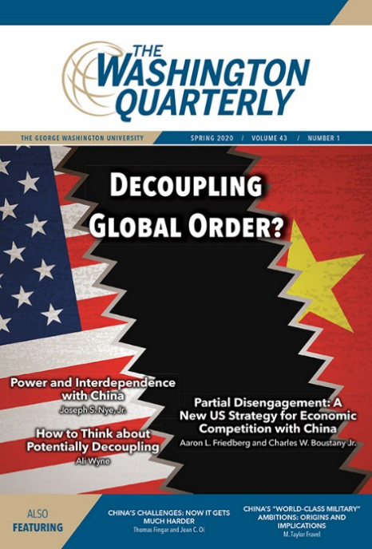
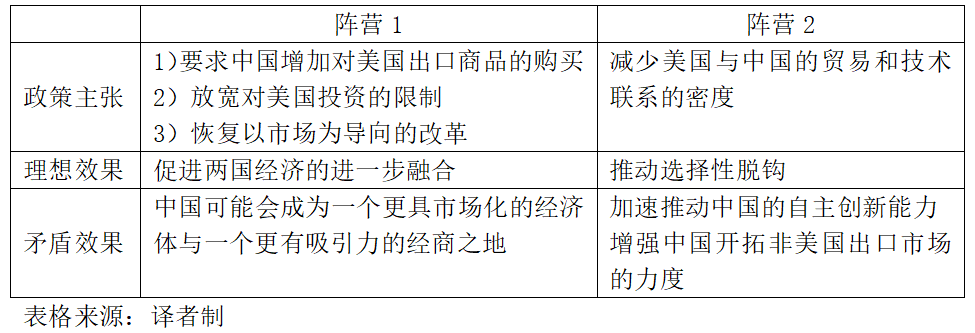

收录于合集

编者按
继今年1月中美第一阶段贸易协定签署之后，新冠疫情再一次引发了人们对中美脱钩可能性的思考，贸易的不确定性加剧了中美关系的不稳定因素。面对美国政策制定者对华脱钩情绪的不断加强，本文作者试图用更加理性的思维方式提出分析和全面评估，建议美国谨慎其对华措施。文中立体地比较了中美两国各自的优劣势，批评了权力转移理论对分析视角的限制，并回应了美国国内对华关切的情绪。需要读者尤其注意的是，作为一份美国智库的政策报告， 本文持有鲜明的美式叙事视角和价值立场，仅代表原文作者的个人观点。 译者认为，这也是本文的独特价值所在： 它提供了除了反华情绪之外的另外一种审视美国对华战略的角度。这有助于读者更加了解美国反华措施的理性来源，并且对美国的对抗行为有所预期，同时从美国的视角了解中国自身的优劣势。译者建议读者理性且有选择地“观察”本文中的相关观点， 知己知彼、扬长补短定当有所裨益。
作品简介
【作者】 阿里·韦恩(Ali Wyne)大西洋理事会斯考克罗夫特战略与安全中心高级研究员、现代战争研究所研究员、杜鲁门国家安全项目安全研究员等。曾任卡内基国际和平基金会研究员、兰德公司政策分析师，哈佛大学肯尼迪学院公共政策硕士。
【编译】 董骁天 （国政学人编译员，北京大学国际关系学院）
【校对】 张晋岚
【审核】 张曼娜
【排版】 杨 洋
【来源】 Ali Wyne (2020) How to Think about Potentially Decoupling from China, The Washington Quarterly , 43:1, 41-64, DOI: 10.1080/0163660X.2020.1735854

期刊介绍
 美国《华盛顿季刊》(The Washington Quarterly）是国际事务的季刊杂志，由战略与国际研究中心(CSIS)创办，艾略特国际事务学院（乔治·华盛顿大学）和泰勒弗朗西斯集团共同承办，涵盖有关全球安全、外交关系和政策影响等议题。
如何看待中美脱钩的可能性？
How to Think about Potentially Decoupling from China？
Ali Wyne
内容摘要
1. 背景概述
1） 从尼克松政府对华开放到奥巴马政府第二任期，美国一直在辩论什么是与中国接触的最好方式，以使其成为罗伯特·佐利克(Robert Zoellick)所说的“负责任的利益相关者”，也就是采取行动以“维持成功的国际体系”。2） 与之明显不同的是，特朗普政府放弃了长期指导美国对华政策的“接触且对冲”(engage but hedge)框架，越来越将美国的焦虑作为其政策教义和指导。美国政策制定者和学者越来越提倡美国有选择地与中国脱钩，并正在寻找可以脱钩的领域。许多人主张，即使贸易和技术相互依赖的增长在一定程度上为美中关系提供了战略稳定的基线，但总体来看这种动态对美国国家利益的确越来越不利。3） 尽管共和党人和民主党人在特朗普政府对外政策的许多方面存在分歧，但他们都在很大程度上支持对中国的重新调整（至少是在理论层面）。临近的2020年总统大选为评估这一调整的结果提供了合适的机会。如果特朗普总统连任，他很可能会采取更大的努力来减少美中相互依存。
2. 核心观点
1） 作者认为美国国内对中国更加强硬的抽象愿望(abstract desire)是可以理解的，但它应当关注两项基本任务：确定美国希望与其首要竞争对手达成什么样的长期相处方式，并明确其为实现该目标可能采取的战略。2） 美国可能夸大了其对中国经济的单边杠杆作用，中等国家可能会继续采用混合方式(hybrid approach)来平衡处理同美国与中国的关系。美中两国之间的权力转移不大可能出现，而且中国的复兴可能不会像苏联的进攻行为那样调动美国的反应。3） 作者认为，如果美国打算在此过程中有选择地与中国脱钩并降低中国的经济竞争力，则应更严格地评估其对中国发展的影响力以及美国可以从其他国家获得多少支持。而且，如果在寻求逐步脱钩的过程中，美国正在增强自身实力以同中国展开长期性、多方面的竞争，那么其应该更仔细地考虑双边关系如何发展以及中国的复兴在多大程度上会刺激美国的复兴。
3. 文章内容框架
本文没有概述美国对华政策的改进。相反，它提供了两个中肯的建议。 首先，美国应当谨慎行事。作者认为美国在调整过去的对华政策时应谨慎行事。 对于美中关系的再调整应当经过深思后采取与风险匹配的措施，因为除拥有约六分之一的世界人口外，中国有望在本世纪中叶之前超过美国的绝对经济规模。 其次，美国应主要关注刺激自身的复兴。 美国对自己的前景越有信心，对自己的方向就越有把握，就越不容易对其对华政策进行过度调整。因为美国可以通过评估先前的假设并承认战略竞争的内在挑战而清晰地审视整个局面，而不是试图强行全面脱钩或得出新冷战即将来临的结论。 本文的其余部分考虑了美国决策者在完善对中国的看法时应权衡的四个问题：美国对中国经济发展的影响力如何、中等国家是否会与美国结盟、两国权力转移的可能性有多大，以及中国的复兴是否能促进美国的复兴？最后，作者以对美国长期行为的一些思考作为总结。
文章导读
01
问题一：美国自身将对中国的经济发展产生多大影响？
（一）单方面对华经济施压的效果存疑 作者认为，从目前来看美国经济实力的绝对优势意味着它可能通过单方面采取行动而让中国在短期内十分头痛，正如特朗普政府通过使用关税、公司黑名单和出口管制所证明的那样。美国占全球产出的24％，占全球财富的30％，而美元继续锚定全球金融市场。 然而问题在于，美国是否可以利用单方面的经济压力来打乱中国的阵脚，从而获得系统性的竞争优势？ 许多证据表明这一做法十分值得怀疑。 **作者认为，没有欧盟和日本等盟国和伙伴的一致支持，美国不太可能向中国施加压力来要求其打击给中国带来不公平竞争优势的做法。
** （二）中国已经证明它可以承受和适应单方面的经济压力 美中两国在2020年1月中旬签署的阶段性贸易协议明确了过去一年半以来日益显著的事实——中国能够承受并适应单边经济压力。 尽管去年中国对美国的出口急剧下降，但对欧盟和东南亚的出口增加弥补了这一损失。总的来说，到2019年底，中国在全球出口中所占的份额略高于2018年中期特朗普第一批关税冲击时的水平。 作者指出，特朗普政府对华贸易谈判代表中的两个阵营之间的竞争产生了自相矛盾的影响，它不仅不利于美国采取连贯一致的做法，还最终可能会加强和巩固中国的竞争力。（如下表所示） （三）中国正在更加努力地降低相互依存 一些学者可能会抗辩说即使美国在试图限制其发展方面并非如此咄咄逼人，中国也会寻求更大的经济自足性。毕竟，在贸易紧张局势爆发之前，中国已逐渐减少了对美国经济的依赖。与此同时，它认为相互依存的底线符合其国家利益。然而现在，中国正在更加努力地降低对这种依赖，越来越多的中国学者将美中相互依存视为中国发展的不利因素，特别是在前沿技术领域。 因此有一种担忧是，通过对中国步步紧逼，美国可能最终会加速一个更强大的竞争对手的到来。
02
问题二：从长远来看，中等国家会和美国结盟吗？
十多年来，学者一直在警告说，中等国家——特别是但不限于中国周边地区——有一天将被迫在美中之间做出选择，这主要是由于中国日益增长的经济实力。实际上，这对于中等国家来说不是一个简单果断的单项选择题，而是要经过多年才能做出的一系列军事、外交和经济决定。 首先，作者认为，大多数中等国家将继续对美国和中国采取混合方案(hybrid approach)。 以日本为例：其在增进与美国的军事关系的同时，还在与中国和韩国讨论三方自由贸易协定并参加有关区域全面经济伙伴关系(RCEP)的谈判。 **如果连美国在印太地区最亲密的盟友都利用自身的多种机会来增强与中国的经济联系，那么美国既不应该假定中等国家最终必须做出单一选择，也不应该预期这些国家将本能地与美国保持一致，原因如下：
** 1）在担忧中国复兴的同时，人们对美国行为不可预测性也感到强烈忧虑。 特朗普政府将基于规则的秩序更多地视为自我强加的约束而不是美国的竞争优势。在推翻他认为不利于美国经济的制度的过程中， 特朗普既瞄准了合作伙伴，也瞄准了竞争对手 ，这似乎常常使两者之间没有什么区别。 2）美国将更多的精力放在劝阻中等国家接受中国的倡议上，而不是推广自己的倡议。 例如，奥巴马政府强烈游说各国反对亚洲基础设施投资银行(AIIB)，然而该机构招募了57位创始成员，其中包括美国许多最亲密的盟友和合作伙伴。
03
问题三：权力转移的可能性有多大？
作者认为美中两国在未来更有可能保持一种紧张和不安定的共存关系，原因如下： 第一，中国的意图尚未明确。虽然美国似乎越来越不确定其在世界事务中扮演的角色，但不清楚中国是否试图取代它来作为维持全球秩序的“责任者”。 实际上，乔治城大学的奥里亚纳·斯凯拉·马斯特罗(Oriana Skylar Mastro)得出的结论是，中国无意建立全球同盟网络、维持广泛的全球军事存在、领导国际机构以限制自身行为或将其政治制度扩展到国外。在不断抨击美国领导秩序的同时，中国一直在谨慎地描绘其偏好的国际体系的轮廓。 第二，尽管美国处于相对衰落状态，但它仍保持着强大的实力；尽管中国经历了非同寻常的复兴，但它仍然有许多关键性的障碍需要克服。作者提到，美国在高等教育领域与全球军事投射能力方面仍具有无可匹敌的优势。另一方面， 虽然中国的复苏无可争议，但其所面临的内部挑战也愈发严峻（例如庞大的债务问题、日趋严重的老龄化问题以及棘手的台湾、香港问题）。在对外方面，中国还需处理来自邻国对其崛起的担忧以及未来可能出现的摩擦。
因此，作者认为，美中两国应该接受彼此长期共存的现实。 一味臆想中国会屈服于内部矛盾会使美国变得自满，然而得出中国一定会成为全球领导者的论断又可能会使美国反应过度。在权力转移理论的框架内分析美中紧张关系会使我们关注于离散(discrete)且可能性很小的结果：武装对抗、以中国为中心的等级制度、其中一方会获得胜利的新冷战，或在任者和继任者之间会有一条安全过渡的“通道”。最可能的结果也是最不引人注目的：持续地共同演进。美中两国会不断地磨合，并寻求更加清晰地了解各自愿意为其理解的关键国家利益做出的牺牲。 从一开始就接受美中两国关系长期处于模棱两可状态的可能性对于制定可持续的对华政策至关重要。
04
问题四：中国的复兴可能会刺激美国的复兴吗？
第一，冷战的结束使美国容易陷入战略困惑，而迫切需要一个战略对手。 在过去的二十年中，美国不仅出现了战略转向，还发起了针对具有适应性的恐怖主义威胁的不断扩大的运动，美国在印太战略发展中发挥的作用十分有限，与其在印太地区的宣称的国家利益并不匹配，同时在阿富汗、伊拉克、利比亚和叙利亚的干预也失败了。《金融时报》专栏作家贾南·加内什(Janan Ganesh)得出结论：“国际竞争对手的缺席对美国国内政治而言是一场灾难，而中国作为一个新的对手可能是意外的好事。至少自20世纪80年代以来，美国人第一次面临着经济、意识形态和军事挑战，这种挑战能让内部对立显得无关紧要，甚至可以说是不合情理。” 第二，中国的复兴似乎确实为美国提供了一个有利的机会以恢复其熟悉的目标，即与其强劲的挑战者对抗。 中国的例外论观念与美国的核心价值背道而驰，前者正在全球范围内运用其迅速发展的经济实力，并日益强调战后秩序的规范性和制度的不平等性。《金融时报》马丁·沃尔夫(Martin Wolf)在去年参加比尔伯格集团(Bilderberg Group)的会议后，概括了会议的内容：“苏联的解体留下了一个很大的空缺，反恐战争只是一个分量不足的替代品，但是中国满足了美国寻找外部对手的所有要求。对于美国来说，中国可能成为许多人所需的意识形态、军事和经济对手，至少是一个水平相当的对手。” 然而，作者认为中国可能还不能催化美国国内的凝聚力。原因如下： 首先，中国并未准备好提出替代性的世界秩序方案。 相比于试图用一个处于萌芽阶段的替代性世界秩序概念来约束一个复杂的竞争对手而言，用普世的意识形态作为借口，动员公众舆论并克服政策惯性来制衡其拥核的对手要容易得多。2016年初，傅莹时任中国全国人大外事委员会主席，当时她写了一篇文章声称战后秩序已经过时。但在文章末尾，她提到：“显然我们还停留在批评和不满的阶段，未准备好新的设想。” 其次，美国国内仍有较大分歧。 在应对中国构成的竞争挑战时，美国不仅在国家安全机构、企业界和公众之间存在巨大的认知差距，而且在每个选区内部也存在分歧。胡佛研究所的艾米·泽加特(Amy Zegart)解释了关于脱钩的种种说法：“当今美中竞争的主要特征不是铁幕(an iron curtain)下的分歧，而是遍布全球资本市场和供应链。”即便是最坚定的决心也可能无法实现全面的脱钩。因此，作者认为美国必须适应现实：美国无法仅仅通过纯粹的努力来阻止自身影响力的相对衰弱。另一方面，如果美国利用这种焦虑来振兴国内经济并提升美国召集盟友应对紧迫的全球挑战的能力，那么同样的情绪可能成为复兴的手段。 美国越明确自身希望对世界做出的贡献，就越有可能建设性地利用这种担忧。 美国应将对华战略放在一个更广泛积极的议程之下，并以此作为行动指导。
05
结论：一个更具竞争力的美国？
综上所述，作者认为 美国可能夸大了其对中国经济的单边杠杆作用， 中等国家可能会继续采用混合方式(hybrid approach)来平衡处理同美国与中国的关系。美中两国之间的权力转移不大可能出现，而且中国的复兴可能不会像苏联的进攻行为那样调动美国的反应。此外，美国应当采取谨慎的态度，并假设其对中国内部事务的影响力将持续减弱，中国将会不断地调整政策来适应新形势。另外，作者从美国政策建议的角度提出，美国不应让过度夸大的预测取代经过深思熟虑的判断。中国有望成为日益强大的竞争者，美国仍必须努力与之抗衡并保持最基本的合作。 最后，只有将重点放在提升自己的竞争力上（而不是削弱中国的竞争力），美国才能向中等国家表明美国具有更持久的影响力。 尽管中国的复兴可能并不像美国所期待的那样能够带动后者的复兴，但这并没有否认如果美国采取有远见的政策，那么中国的复兴将起到一定的催化作用。作者认为对美国而言的好消息是，美国可以采取许多措施来革新其权力基础并恢复对外影响力，而不受中国行为的影响。

本文由国政学人独家编译推荐，文章观点不代表本平台观点，转载请联系授权。
添加 “国小政”微信，获取最新资讯


好好学习，天天“在看”

国政学人
支持学术公益与知识传播
微信扫一扫赞赏作者 __赞赏
已喜欢，对作者说句悄悄话
取消 __
发送给作者
发送
最多40字，当前共字
上一页 1/3 下一页
长按二维码向我转账
支持学术公益与知识传播
受苹果公司新规定影响，微信 iOS 版的赞赏功能被关闭，可通过二维码转账支持公众号。